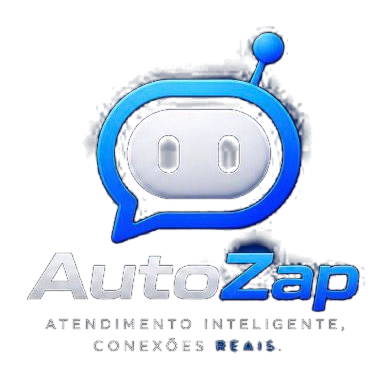
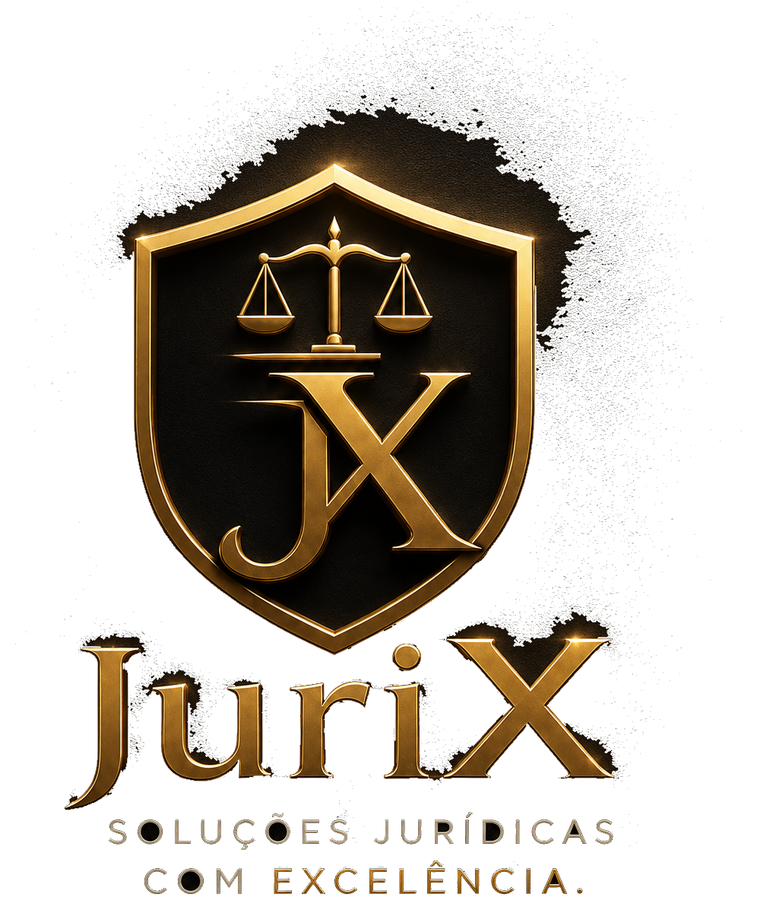
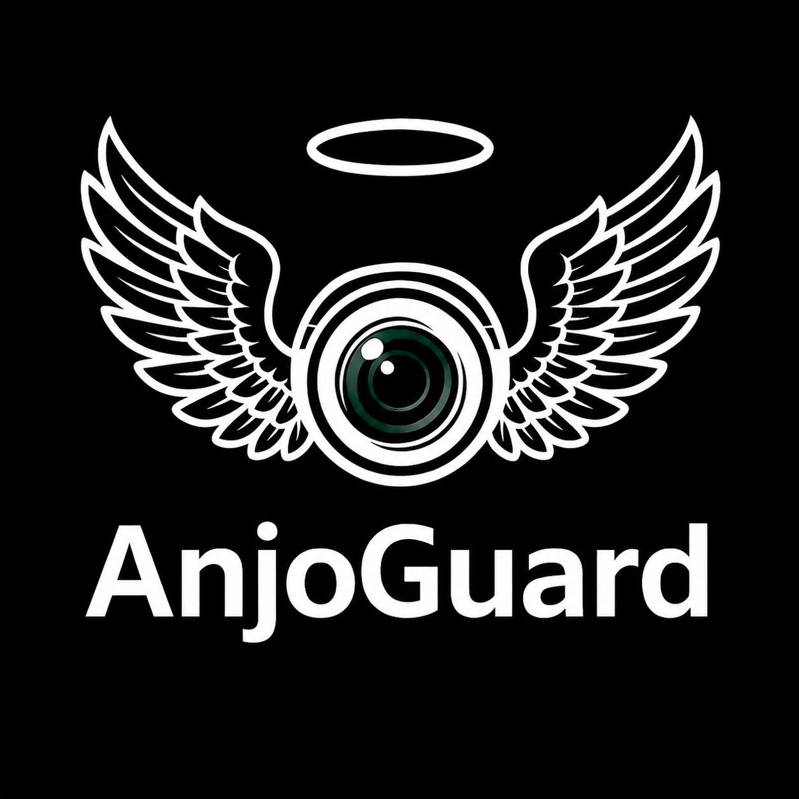

Engenharia
Construímos sistemas — não campanhas, consultorias ou serviços pontuais.
Software · IA · Automação
Plataformas comerciais, inteligência artificial e automação. Do software de operação a novas formas de interação entre pessoas, dados e máquinas.
A empresa
A Rafylsck Industries desenvolve software, inteligência artificial, automação, plataformas comerciais e projetos de pesquisa. É a estrutura por trás de um conjunto de produtos independentes.
AutoZap é o principal deles. A empresa é maior do que qualquer produto individual.
Construímos sistemas — não campanhas, consultorias ou serviços pontuais.
Cada produto resolve um problema próprio. A empresa existe para sustentar o conjunto.
Parte do trabalho acontece antes de existir mercado, categoria ou solução definitiva.
Produtos
Reduzir trabalho repetitivo, organizar informação e transformar software em capacidade operacional.

Produto · Commerce
O sistema operacional comercial para negócios que vendem pelo WhatsApp.
Atendimento por IA, estoque, clientes, agenda, financeiro, marketing e fiscal em uma única operação. O objetivo não é um chatbot — é dar contexto real da empresa ao atendimento.
Conhecer AutoZap →Em desenvolvimento
AI · Education
Interpretação de questões digitais e apoio à resolução — visão computacional, linguagem e automação de interface.
Conhecer →MVP
Commerce · Affiliates
Infraestrutura para seleção e operação de produtos de afiliados — produtividade, não renda fácil.
Conhecer →Em desenvolvimento
AI Media
Pipeline de produção e distribuição audiovisual — do conteúdo bruto à publicação em múltiplos canais.
Conhecer →Em desenvolvimento
Marketing AI
Do briefing estratégico à rotina operacional — conteúdo, calendário e publicação.
Conhecer →
Em desenvolvimento · Legaltech
Software e inteligência aplicados ao trabalho jurídico — organização de informação e automação de tarefas repetitivas. Não substitui o advogado nem oferece aconselhamento jurídico.
Conhecer JuriX →Ecossistema
Produtos independentes, organizados por área, conectados pela mesma arquitetura de engenharia.
Specialized
JuriXPesquisa & desenvolvimento
O núcleo de P&D explora inteligência artificial, automação, segurança, sistemas físicos e novas arquiteturas de software — antes de existir mercado.
Pesquisa
Security Intelligence
Como sistemas automatizados podem correlacionar sinais obtidos por meios legítimos para apoiar a identificação de riscos digitais.
Explorar CyberCop →
Pesquisa
Assistance Technology
Tecnologia aplicada a suporte, assistência e monitoramento em contextos humanos — software, IA, sensores e dispositivos. Sem capacidade médica certificada.
Explorar AnjoGuard →Parcerias
A Rafylsck Industries está aberta a parceiros, investidores privados e empresas alinhadas a IA, automação, legaltech e sistemas inteligentes.
As conversas são privadas, mediante alinhamento estratégico, estágio do projeto e modelo de participação.
Contato
Conversas institucionais, parcerias, investimento ou projetos.